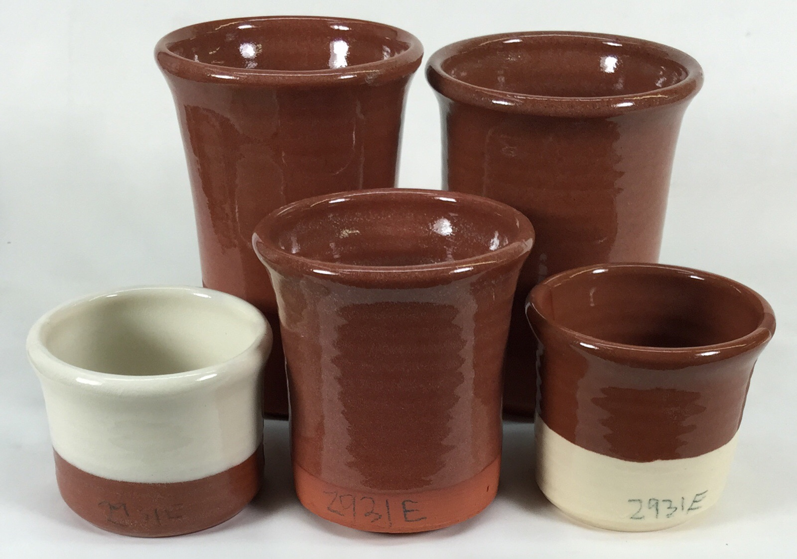
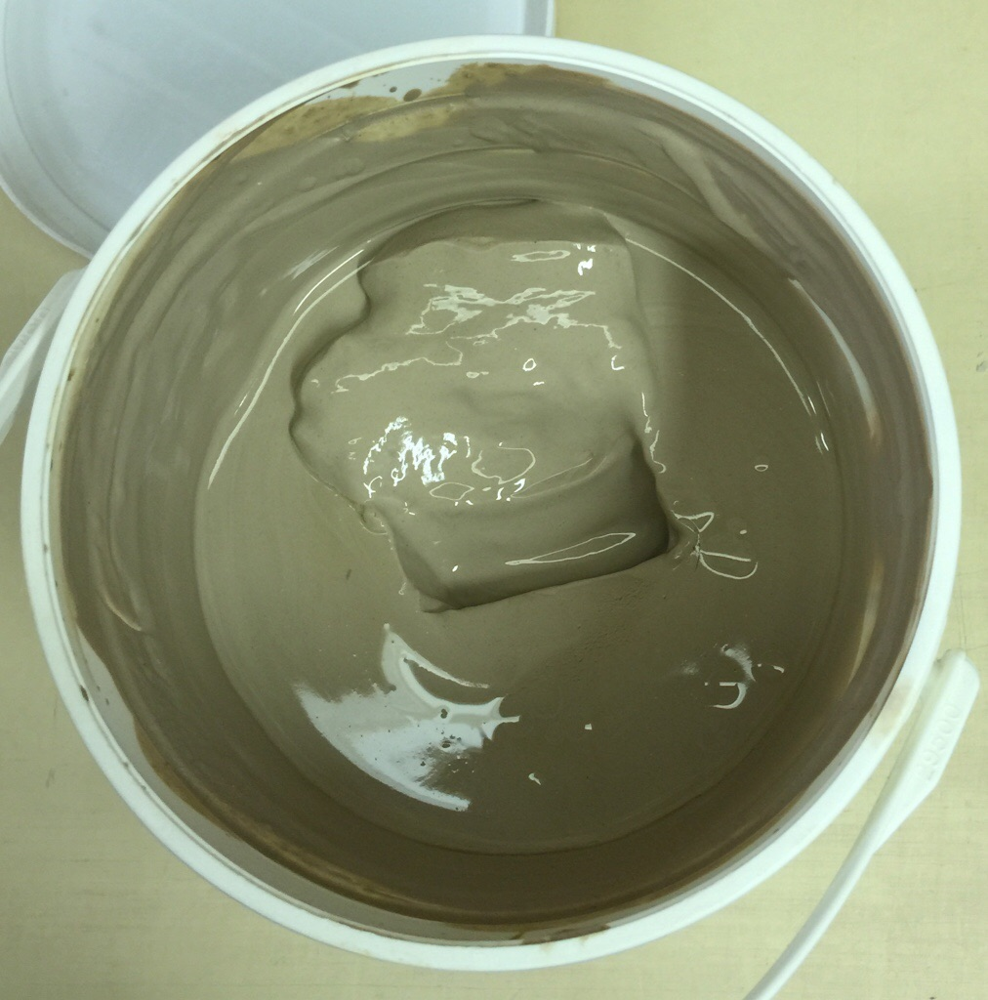
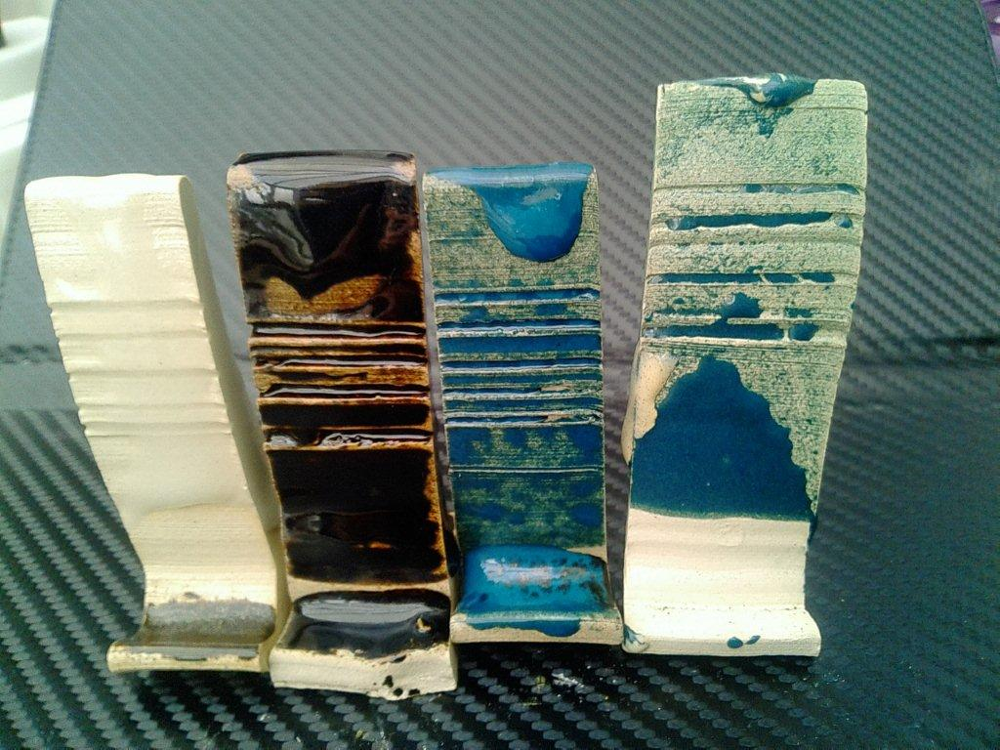
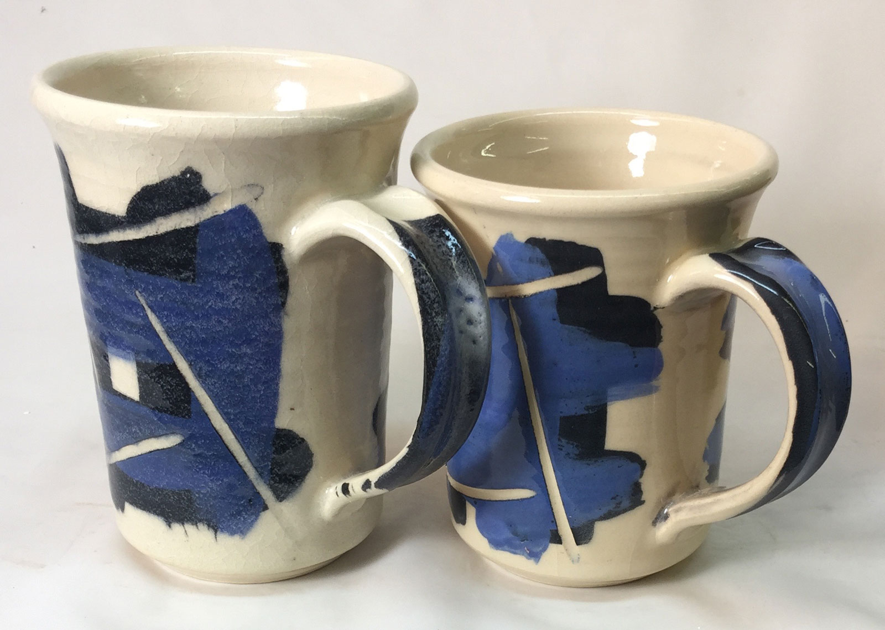
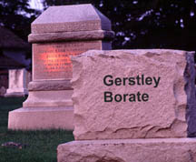
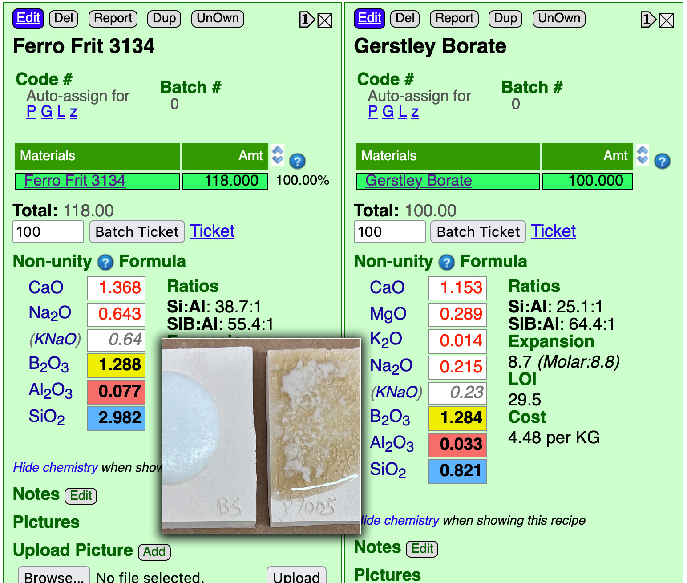

3D Printing a Clay Cookie Cutter-Stamper
A 3-minute Mug with Plainsman Polar Ice
A Broken Glaze Meets Insight-Live and a Magic Material
Accessing Recipes from "Mid-Fire Glazes" book in Insight-Live
Adjusting the Thixotropy of an Engobe for Pottery
Analysing a Crazing, Cutlery-marking Glaze Using Insight-Live
Compare the Chemistry of Recipes Using Insight-Live
Connecting an External Image to Insight-Live Pictures
Converting G1214M Cone 6 transparent glaze to G1214Z matte
Create a Synthetic Feldspar in Insight-Live
Creating a Cone 6 Oil-Spot Overglaze Effect
Design a Triangular Pottery Plate Block Mold in Fusion 360
Designing a Jigger Mold for a Bowl Using Fusion 360 CAD
Downloading and 3D-Printing a 3MF file
Draw a propeller in Fusion 360 for use on an overhead propeller mixer
Drawing a Mug Handle Mold in Fusion 360
Drawing a Mug Mold Using OnShape CAD
Enter a Recipe Into Insight-live
Entering TestData Into Insight-Live
Fine tune the thixotropy of a glaze or engobe slurry
Getting Frustrated With a 55% Gerstley Borate Glaze
How I Developed the G2926B Cone 6 Transparent Base Glaze
How I Formulated G2934 Cone 6 Silky MgO Matte Glaze Using Insight-Live
How to Apply a White Slip to Terra Cotta Ware
How to Paste a Recipe Into Insight-live
Importing Data into Insight-live
Importing Desktop Insight Recipes to Insight-live
Importing Generic CSV Recipe Data into Insight-Live
Insight-Live Meets a Silica Deprived Glaze Recipe
Insight-Live Quick Tour
Liner Glazing a Stoneware Mug
Make a precision plaster mold for slip casting using Fusion 360 and 3D Printing
Making ceramic glaze flow test balls
Making test bars for the SHAB, LDW and DFAC tests
Manually program your kiln or suffer glaze defects!
Mica and Feldspar Mine of MGK Minerals
Predicting Glaze Durability by Chemistry in Insight-Live
Preparing Pictures for Insight-live
Replace Lithium Carbonate With Lithium Frit Using Insight-Live
Replacing 10% Gerstley Borate in a clear glaze
Same Beer Bottle Mold Using Fusion 360 and OnShape CAD
Signing Up at Insight-live.com
Signing-In at Insight-live.com
Slip cast a stoneware beer bottle
Substitute Ferro Frit 3134 For Another Frit
Substituting Custer Feldspar for Another in a Cone 10R Glaze Recipe
Thixotropy and How to Gel a Ceramic Glaze
Use Insight-live to substitute materials in a recipe
Watch Thixotropy Happen With a 20kg Batch of Dipping Glaze
Getting Frustrated With a 55% Gerstley Borate Glaze
I show you why people love/hate this material and how I substituted it for Ulexite in this crazy recipe to make a far easier-to-use slurry that fires identical.
Click here to watch this at youtube.com or click here to go to our Youtube channel
Transcript/Notes
Let me show you what the slurry of Worthington Clear, a 55% Gerstley Borate recipe, is like: A dreadful bucket of jelly!
You'll hear the frustration in my voice about how anyone could use this and about two poor options to endure it:
-Adding water - No good because it will dry even slower.
-Add Darvan - No, it just gels again later.
more..
Using an iPhone and my account at insight-live.com I show you how explore a couple of other options:
-Switching the EPK to calcined kaolin hoping that reducing the total clay content (Gerstley Borate is a clay), will make it gel less. That does not work!
-Switching Gerstley Borate for Ulexite (calculation done off-camera).
For that last option I demonstrate:
How I check the specific gravity.
How I add water to tune the slurry to 1.42 specific gravity.
How I flocculate it with a little vinegar (to be thixotropic), and then enjoy seeing how well it applies to test tiles.
How I use code numbers to organize testing.
How I flip back and forth between my PC and phone when doing the work.
The next day, using my tablet to get into my Insight-live account, we look at the fired GLFL balls, glazed terra cotta tiles and glazed L210 mugs.
Ulexite is difficult to obtain, I used it here just to demonstrate one way option. And even better option is using a frit.
Links
| URLs |
https://insight-live.com/insight/share.php?z=HzyNzj9ELs
Replacing the Gerstley Borate in recipes containing 50% or more of it Many recipes were built on bases employing exceptionally high percentages of Gerstley Borate. At medium temperatures these melt fluid transparents hosted additions of colorants, variegators and opacifiers. At low fire they were used as transparents over underglaze decoration. |
| Materials |
Gerstley Borate
Gerstley Borate was a natural source of boron for ceramic glazes. It was plastic and melted clear at 1750F. Now we need to replace it. How? |
| Materials |
Ulexite
A natural source of boron, it melts at a very low temperature to a clear glass. |
| Materials |
Gillespie Borate
A Gerstley Borate substitute that became available during the early 2000s and is still available in 2023. |
| Articles |
Trafficking in Glaze Recipes
The trade is glaze recipes has spawned generations of potters going up blind alleys trying recipes that don't work and living with ones that are much more trouble than they are worth. It is time to leave this behind and take control. |
| Glossary |
Glaze Gelling
Glaze slurries can gel if they contain soluble materials that flocculate the suspension. Gelling is a real problem since it requires water additions that increase shrinkage. |
| Typecodes |
Gerstley Borate Glaze Calculation examples
Examples of how we use glaze calculations (in an Insight-Live.com account) to replace Gerstley Borate with other materials, especially frits, in various glaze recipes. In doing so we take the opportunity to improve the recipe in other ways (e.g. reduce thermal expansion, improve slurry properties, reduce bubbling and crawling). |
A cure for long-time Gerstley Borate sufferers

This picture has its own page with more detail, click here to see it.
These are various different terra cotta clays fired to cone 04 with a recipe I developed that sources the same chemistry as the popular G2931 Worthington clear (50:30:20 GB:Kaolin:Silica) but from a different set of materials. The key change was that instead of getting the B2O3 from Gerstley Borate I sourced it first from Ulexite (G2931B) and then from a mix of frits (G2931K). All pieces were fired with a drop-and-hold firing schedule C03DRH. Fit was good on many terra cottas I tried (pieces even surviving boiling:icewater stressing). Where it did not fit I had thermal expansion adjustability because more than one frit was sourcing the boron. Frits are so much better for sourcing B2O3 than Gerstley Borate (the latter is notorious for turning glaze slurries into jelly!). Of course, a little glaze chemistry is needed to figure out how to convert a recipe from Gerstley Borate bondage to frit freedom, but there is lots of information here on how to do that.
Why would a glaze turn into a jelly like this?

This picture has its own page with more detail, click here to see it.
This is one of the things Gerstley Borate commonly does (when its percentage is high enough). It is also highly thixotropic - this can be stirred vigorously to thin it, yet within seconds it turns back to jelly again. This is part of the reason it is often referred to as “ghastly borate”. Side effects of this include high water content, slow drying, excessive shrinkage on drying, cracking and crawling. To attempt a fix, I deflocculated it with Darvan. It was stable enough to dip bisque ware, with difficulty (but pieces dried very slowly). But overnight it has turned back into a gel. What can be done with a mess like this? Start over, with three options:
1. Identify the mechanism to isolate the base recipe and substitute another.
2. Replace the Gerstley Borate with an equivalent that does not do this (Gillespie Borate).
3. Do a little chemistry to source the B2O3 from a frit instead (e.g. in an account at insight-live.com).
Colemanite and what its decrepitation does in glazes

This picture has its own page with more detail, click here to see it.
Decrepitation refers to a decomposition accompanied by scaling, delayering, even disintegration of the glaze layer. Moving rightward these glazes have increasing percentages of colemanite. At its worst (far right) the glaze is spattering off the sample and onto the kiln shelf. The others are crawling, first pulling away from the corners (far left) moving toward pulling away on the flat surfaces (center). Gerstley Borate and Ulexite, similar minerals, are far less likely to do this (but they have other serious issues also). A much better solution is to use frits to source the oxide B2O3 (easy to do in your account at Insight-live.com). Photos courtesy of Nigel Hicken.
Click here for case-studies of Insight-Live fixing problems

This picture has its own page with more detail, click here to see it.
You will see examples of replacing unavailable materials (especially frits), fixing various issues (e.g. running, crazing, settling), making them melt more, adjusting matteness, etc. Insight-Live has an extensive help system (the round blue icon on the left) that also deals with fixing real-world problems and understanding glazes and clay bodies.
Original glaze with Gerstley Borate vs. improved version with frit

This picture has its own page with more detail, click here to see it.
These pieces are fired at the same temperature. The glaze on the left is a popular recipe found online, Worthington Clear (our code number G2931). The Gerstley Borate in it is "farting" as the glaze is melting (the calculated LOI of the glaze as a whole is 15% mainly from that one material). Unless applied very thinly tons of micro-bubbles appear (this example is fired to cone 03). And strange, it is crazing badly also despite the low calculated thermal expansion. Using my account at insight-live.com I was able to source the B2O3 and MgO from a frit (actually two frits) to create the G2931K recipe. Although the thermal expansion calculates higher it is strangely fitting better (albeit not firing as white). As you can see, the new fritted glaze is very glassy and clear (thick or thin).
Gerstley Borate passed on:
It will be missed by many, not by others.

This picture has its own page with more detail, click here to see it.
Near the end, Gerstley Borate first became Costly Borate. The supplier, LagunaClay.com, raised the price to wake us all up to take action in substituting it before supplies ran out. It was a plastic ceramic glaze flux, sourcing boron to melt better than any other common raw material. It had been a foundation material in low and middle temperature pottery glaze recipes for many decades. Potters had a love/hate relationship with it: Enjoying its low melting point but enduring its problems (inconsistency, gelling of the slurry, crawling, micro-bubbles, boron-blue discoloration). Strangely most people used it without knowing what it really was. And few realized how easy it is to replace. Gillespie Borate ended up being the substitute of choice. But it has issues too. The best is to adjust each glaze recipe to source boron from a frit (fixing other issues also).
Please read that last statement carefully. It did not say that there is any frit that can substitute. It said that frits can source boron.
Ferro Frit 3134 is NOT A SUBSTITUTE for Gerstley Borate

This picture has its own page with more detail, click here to see it.
This frit, or any of similar chemistry (e.g. Fusion F-12) IS NOT A 1:1 SUBSTITUTE for Gerstley Borate, their chemistries are too different. That being said, the frit sources lots of B2O3, that makes it a candidate to weave into recipes as the source of boron. To show the difference I have put 100 parts of each in side-by-side recipes in my Insight-live.com account, set the calculation type to non-unity formula and increased the frit until the B2O3 in the two match. Notice it takes 118g of the frit to source the same amount of B2O3 as 100 GB. Notice also that the frit sources almost triple the amount of Na2O per weight unit (that is a big deal because it means the recipe containing the Gerstley Borate to be substituted needs an Na2O-sourcing material that can be reduced to compensate). And the frit sources 3.5 times the SiO2 (other SiO2-sourcing materials in the recipe will need to be cut to compensate). And the Gerstley Borate has significant MgO while the frit has none (so an MgO-sourcing material like talc will be needed). Minor tweaks will also be needed to reduce other sources of CaO (since the frit has quite a bit more). The recipe will also need enough flexibility to do the final matching of Al2O3 and SiO2. The GBMF test confirms the difference at 1700F, these 10-gram balls melted down onto the tiles very differently.
 PayPal | No tracking, No ads, No paywall, No transient content! Just organized, concise information constantly updated and improved. Was this helpful? Consider supporting me. |
| By Tony Hansen Follow me on        |  |
Got a Question?
Buy me a coffee and we can talk 

https://digitalfire.com, All Rights Reserved
Privacy Policy